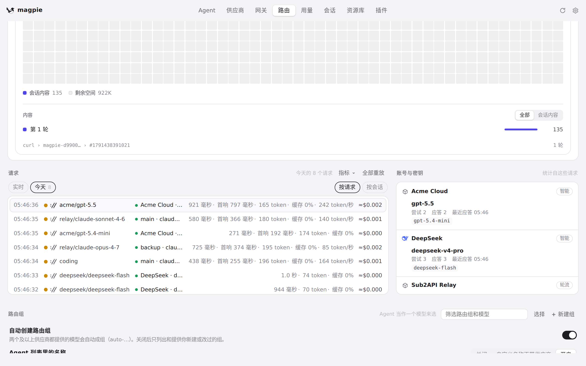
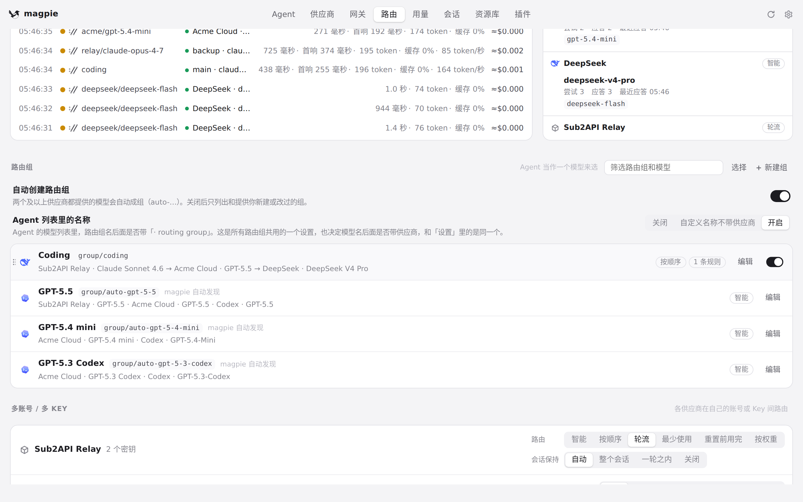
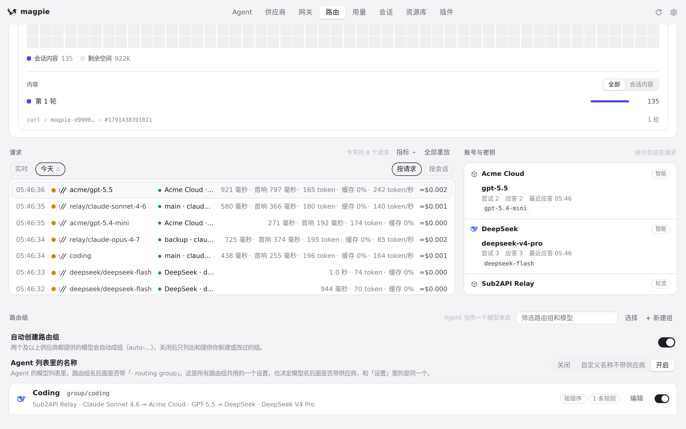
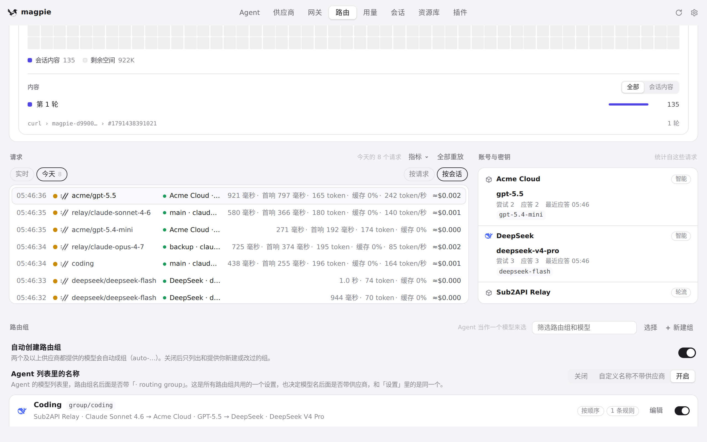

#1247 界面预览
commit 929b1e3 · 回到 PR · 路由页请求列表上方的用途筛选，从只能选一个用途改成带复选框的多选菜单：每勾选一个用途就立刻把列表、计数、当前故事、历史与会话分组收窄到所选用途的并集，菜单保持打开；清除筛选或取消最后一个用途即恢复全部请求（用量页的用途选择仍是单选，未改动）。
红线是鼠标走过的轨迹，红色圆环是一次点击；底部文字是这一步在做什么。空格暂停，← → 逐段查看。

用途筛选：单选改成多选复选框 · 历史某一天的请求列表与标题栏

用途筛选：单选改成多选复选框 · 路由页请求列表上方的标题栏

用途筛选：单选改成多选复选框 · 历史某天的请求列表和上方的用途筛选处
 多选筛选跨日期与会话分组 · 两个用途勾选后的当天列表与计数
多选筛选跨日期与会话分组 · 两个用途勾选后的当天列表与计数
 多选筛选跨日期与会话分组 · 另一天的请求列表、计数与标题栏上的用途名
多选筛选跨日期与会话分组 · 另一天的请求列表、计数与标题栏上的用途名

多选筛选跨日期与会话分组 · 按会话分组后的会话与计数
 多选筛选跨日期与会话分组 · 清除筛选后的列表与会话分组
多选筛选跨日期与会话分组 · 清除筛选后的列表与会话分组